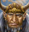

Klíèové postavy
Arlen Torsid - majitel hraïištì
Demiurg Dolvich - obchodní Prospektor
Chabarov - zesnulı mistr Øemeslnické federace
Sid - mistr Øemeslnické federace
Arlen Torsid - majitel hraïištì Harg Torsid
Pevnost Harg Torsid zdìdil po svém otci Radvalovi. Po vzniku "odboje" proti Anakùm ho
nabídl rebelùm jako útoèištì. Zdá se, e patøí mezy ty, kteøí Anaky povaují pøedevším za
politickou hrozbu, take si rozumí pøedevším s mágem Norvinem. Arlen je bezpochyby znaènì
inteligentní, podnikavı a umí se dobøe chovat ve spoleènosti - ještì se nestalo, e by s
nìkım nedokázal vyjít. Nìkoho moná mùe provokovat svım sebevìdomım vystupováním, ale zatím
se nenašel nikdo, kdo by mu to øekl do oèí. Dále se o Arlenovi obecnì ví, e dokud il Radval,
uíval si bezstarostného ivota, vyhledával dobrodruství a dokonce snad experimentoval s magií.
Do pevnosti s Arlenem pøijela i jeho dcera Nessa. Na tu její otec nedá dopustit.
Nahoru
Demiurg Dolvich - obchodní Prospektor
Tento elegantní a ráznı gnom do Harg Torsidu dorazil teprve pøed
dvìma tıdny doprovázen ještì jedním prospektorem vysoce váené Ghornské obchodní
rady. Oba se samozøejmì Arlenovi pøi pøíchodu ihned prokázali patøiènımi dokumenty.
Jejich hlavním úkolem je dohlíet na stavbu hradištì a zajistit, aby se na urychlení
prací na hraïišti podíleli všichni jeho obyvatelé. Chudım vesnièanùm a pionùm
dohazuje nìjakou tu práci, co poukazuje na jeho sympatie k niším vrstvám obyvatel.
Obvykle se pohybuje kolem trištì, kde hlídá, aby všechno klapalo, tak jak má a dbá
na dodrování obchodního zákoníku.
Prodává dokument zvanı "Obchodní glejt", kterı je povinen u sebe mít kadı èlovìk, kterı obchoduje na území
hraïištì.
Nahoru
Chabarov - zesnulı mistr øemeslnické federace

Je to ji dlouho, co se trpaslík Chabarov ujmul role mistra øemeslnické federace.
Pocházel ze staré øemeslnické školy a jeho konzervativní zamìøení mu kázalo dret
se starıch osvìdèenıch postupù a poctivé práce. Novoty, jako stroje, alchimistické
vıbušniny, èi dokonce magie, to byla slova, která jen tìce pøenášel pøes jazyk.
I kdy konkurence zaèala pomalu bohatnout, tak Chabarov pokraèoval tak jak se mu zlíbilo.
Lety se federace zaèala dostávat do úpadku, kterı se zdál v porovnání s ostatními cechy vìtší
a vìtší. Mnozí se jistì ptají, proè nebyl mistr nahrazen nìkım schopnìjším. Odpovìï je jednoduchá.
Øemeslníci ctí jakısi kodex, kterı jim káe úctu k letitım zkušenostem a práci, kterou mistr pro
cech vykonal. Po ètyøiceti letech Chabarovova mistrování byl cech v naprostém rozkladu. Tìba
se stala nebezpeènou pro horníky a mnohé nástroje byly starší ne samotní øemeslníci. Zpracování
a vıroba neprobíhaly také nijak vıteènì vzhledem ke špatnım surovinám. Párkrát se i zdálo, e se
federace rozpadne. Paradoxnì tomu zabránila mistrova smrt. V úctyhodném vìku 89 let umírá
Chabarov ve spánku a za sebou zanechává cech, kterı se ocitá na svém moném vırobním minimu.
Nahoru
Sid - mistr øemeslnické federace
Fungoval po dlouhou dobu jako prodlouená ruka øemeslnické federace. Byl èasto na cestách a v
dalekıch krajích, kde hledal odbytištì pro zboí a suroviny cechu. Nikdy to nemìl jednoduché vzhledem k Chabarovovì vládì.
Co se tıèe samotné manuální práce, tak k té se nikdy nemìl. V poslední dobì se dostával s mistrem
do sporù. Nejvìtší rozepøe nastala ve chvíli, kdy Chabarov rezolutnì odmítal zavedení
mechanickıch strojù do dolù, které by byl Sid schopen sehnat. I pøes tyto rozdílnosti v
názorech jméno dál plnil úkoly cechu a snail se hledat co nejvíce odbytiš pro zboí cechu,
které svım mnostvím i kvalitou zaostávalo za konkurencí.
Po smrti starého mistra došlo k patové situaci, kdy své zájmy v boji o velení zamıšleli hájit
horníci, kameníci a pøedáci kolem døevorubcù. Sid tuto situaci vyøešil zpùsobem svım vlastním.
Jakoto úèetní cechu mìl pøístup k penìzùm cechu a tak to zbylé málo utratil za nutnou modernizaci.
Zadaøilo se a mírnì se podaøilo pozvednout tìbu i vırobu. podaøilo se mu rozšíøit klientelu,
protoe ji nebyl nikdo, kdo by mu stál v cestì. Mezi jeho nejvìtší úspìchy patøí navázání
smlouvy o spolupráci s nejsevernìjším pøístavem poloostrova Illbess Kirinskem (konkrétnì s Kirinskou
námoøní spoleèností). Momentálnì Sid drí kontrolu nad cechem a vyhledává nìjakého
schopného øemeslníka, kterı by mohl pøevzít cech.
"Jeho uhranèiví a pøísnı pohled zùstavá kadému vryt do oèí."
Nahoru